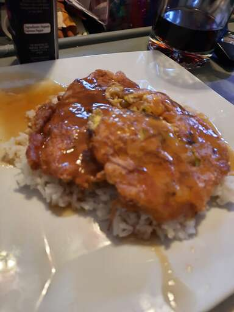

Shrimp Egg Foo Young
Yum.
Preamble
If you are anything like me, you are always craving a shrimp and an egg. Luckily, I have compiled the perfect recipe for Shrimp Egg Foo Young that I have not tried myself and that I took from allrecipes.com.
Description
Ripped directly from https://www.allrecipes.com/recipe/163370/shrimp-egg-foo-young/, and vetted by myself:
This egg foo young recipe includes a delicious sauce to put on top of the patties. This is a very special recipe acquired when I worked at a Chinese restaurant to pay for my red 1966 VW bug when in high school! The recipe card is tattered and spotted now, but the dish is the best egg foo young I have ever had. To serve, place egg patty over steamed rice and put the sauce on top.
Ingredients
- 8 ounces fresh bean sprouts
- 1 cup cooked small shirmp
- 4 LARGE eggs!!
- ⅓ cup thinly sliced green onions
- ¼ teaspoon garlic powder
- 2 tablespoons cornstarch
- 2 tablespoons sugar
- 2 tablespoons Chineese cooking wine, sherry, etc.
- 2 tablespoons soy sauce
Steps
How the hell do you even make this thing?
- Mix the sprouts, shrimp, eggs, green onions, and garlic powder together.
- Heat oil in a skillet, form patties, and fry on both sides until golden brown.
- Make the sauce on the stove, then simmer until thick.
- Spoon the sauce over the patties to serve.
Thank you, Karen. Now I can also enjoy Shrimp Egg Foo Young!